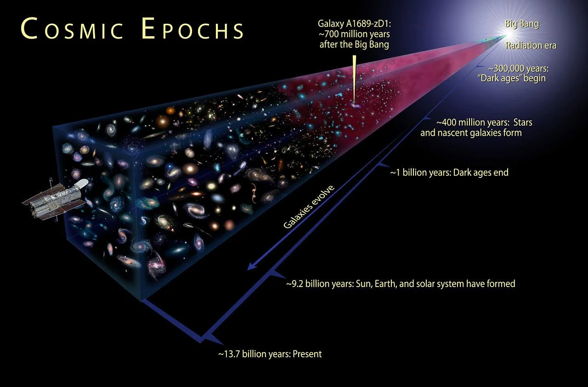
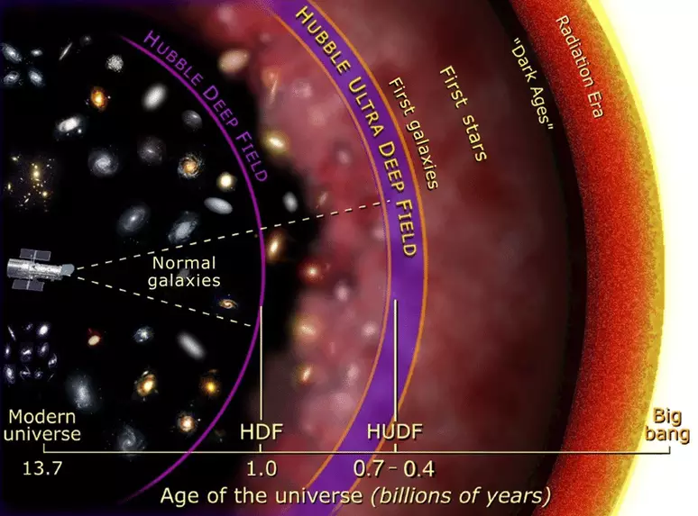
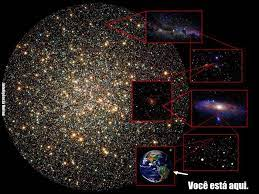
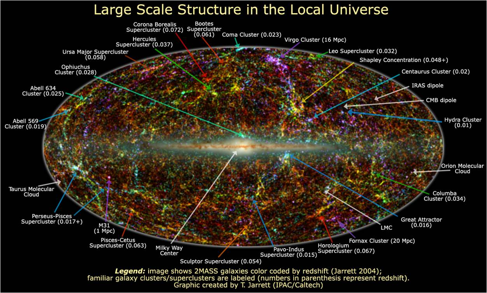
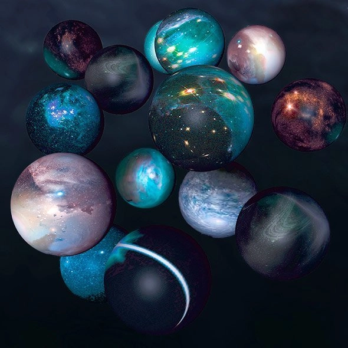
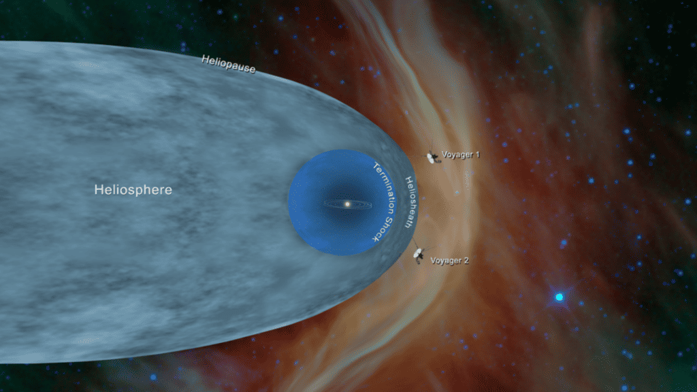

cubo cosmico de galaxias em expasão.

camadas do universo.
milhões de galaxias fora no universo.

como somos insignificantes comparado ao universo.

locais no universo cosmico .

teorias que falam que existe universos além do nosso.

a gente nunca vai conseguir sair do nosso universo.
ó universo tem 98bilhões de anos-luz de diâmetros.